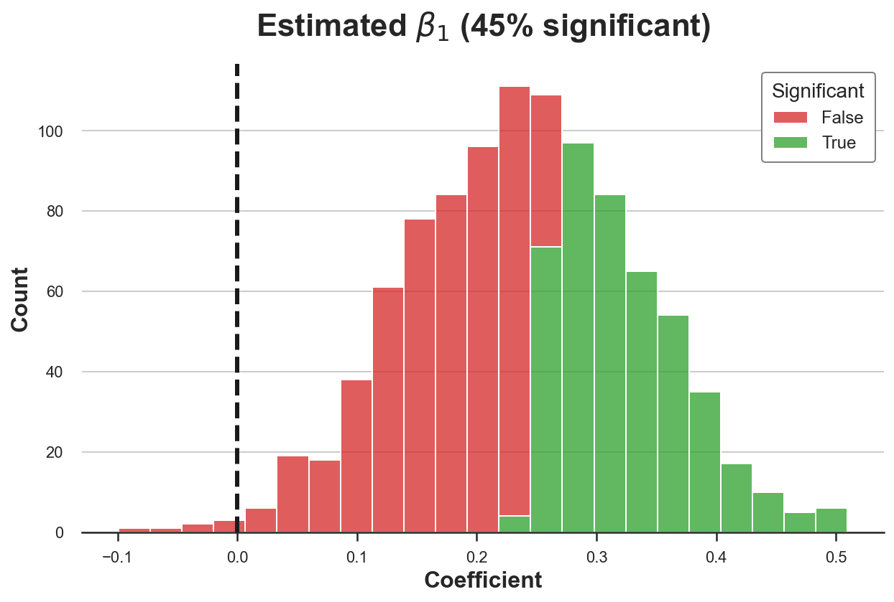
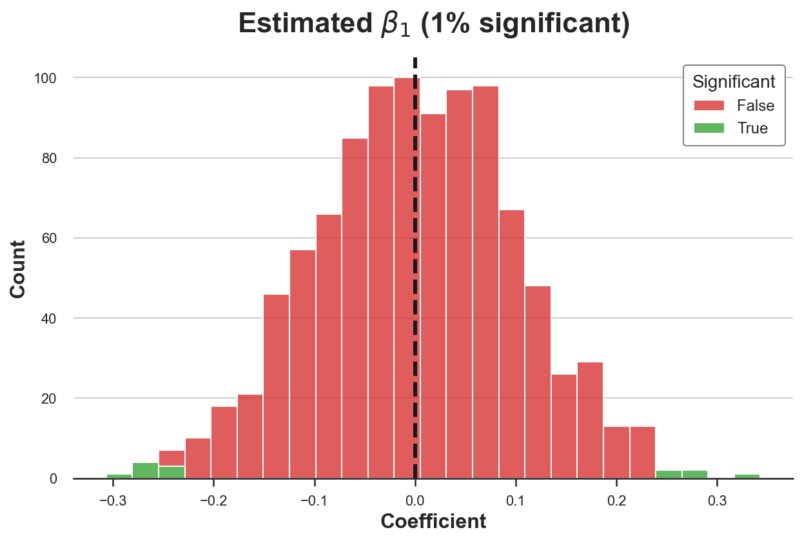

Understanding Contamination Bias

Problems and solutions of linear regression with multiple treatments
In many causal inference settings, we might be interested in the effect of not just one treatment, but many mutually exclusive treatments. For example, we might want to test alternative UX designs, or drugs, or policies. Depending on the context, there might be many reasons why we want to test different treatments at the same time, but generally it can help reducing the sample size, as we need just a single control group. A simple way to recover the different treatment effects is a linear regression of the outcome of interest on the different treatment indicators.
However, in causal inference, we often condition the analysis on other observable variables (often called control variables), either to increase power or, especially in quasi-experimental settings, to identify a causal parameter instead of a simple correlation. There are cases in which adding control variables can backfire, but otherwise, we usually think that the regression framework is still able to recover the average treatment effect.
In a breakthrough paper, Goldsmith-Pinkham, Hull and Kolesár (2022) have recently shown that in case of multiple and mutually-exclusive treatments with control variables, the regression coefficients do not identify a causal effect. However, not everything is lost: the authors propose a simple solution to this problem that still makes use of linear regression.
In this blog post, I am going to go through a simple example illustrating the nature of the problem and the solution proposed by the authors.
Multiple Treatments Example
Suppose we are an online store and we are not satisfied with our current checkout page. In particular, we would like to change our checkout button to increase the probability of a purchase. Our UX designer comes up with two alternative checkout buttons, which are displayed below.

In order to understand which button to use, we run an A/B test, or randomized control trial. In particular, when people arrive at the checkout page, we show them one of the three options, at random. Then, for each user, we record the revenue generated which is our outcome of interest.
I generate a synthetic dataset using dgp_buttons() from src.dgp as data generating process. I also import plotting functions and standard libraries from src.utils.
%matplotlib inline
%config InlineBackend.figure_format = 'retina'
from src.utils import *
from src.dgp import dgp_buttons
dgp = dgp_buttons()
df = dgp.generate_data()
df.head()
| group | revenue | mobile | |
|---|---|---|---|
| 0 | button1 | 8.927335 | 0 |
| 1 | default | 13.613456 | 1 |
| 2 | button2 | 4.777628 | 0 |
| 3 | default | 8.909049 | 0 |
| 4 | default | 10.160347 | 0 |
We have information on 2000 users, for which we observe their checkout button (default, button1 or button2), the revenue they generate and whether they connected from desktop or mobile.
We notice too late that we have a problem with randomization. We showed button1 more frequently to desktop users and button2 more frequently to mobile users. The control group that sees the default button instead is balanced.

What should we do? What happens if we simply compare revenue across groups? Let’s do it by regressing revenue on group dummy variables.
smf.ols('revenue ~ group', data=df).fit().summary().tables[1]
| coef | std err | t | P>|t| | [0.025 | 0.975] | |
|---|---|---|---|---|---|---|
| Intercept | 11.6553 | 0.149 | 78.250 | 0.000 | 11.363 | 11.948 |
| group[T.button1] | -0.5802 | 0.227 | -2.556 | 0.011 | -1.026 | -0.135 |
| group[T.button2] | -0.5958 | 0.218 | -2.727 | 0.006 | -1.024 | -0.167 |
From the regression results we estimate a negative and significant effect for both buttons. Should we believe these estimates? Are they causal?
It is unlikely that what we have estimated are the true treatment effects. In fact, there might be substantial differences in purchase attitudes between desktop and mobile users. Since we do not have a comparable number of mobile and desktop users across treatment arms, it might be that the observed differences in revenue are due to the device used and not the button design.
Because of this, we decide to condition our analysis on the device used and we include the mobile dummy variable in the regression.
smf.ols('revenue ~ group + mobile', data=df).fit().summary().tables[1]
| coef | std err | t | P>|t| | [0.025 | 0.975] | |
|---|---|---|---|---|---|---|
| Intercept | 9.1414 | 0.110 | 82.905 | 0.000 | 8.925 | 9.358 |
| group[T.button1] | 0.3609 | 0.141 | 2.558 | 0.011 | 0.084 | 0.638 |
| group[T.button2] | -1.0326 | 0.134 | -7.684 | 0.000 | -1.296 | -0.769 |
| mobile | 4.7181 | 0.116 | 40.691 | 0.000 | 4.491 | 4.946 |
Now the coefficient of button1 is positive and significant. Should we recommend its implementation?
The answer is surprisingly no. Goldsmith-Pinkham, Hull, Kolesár (2022) show that this type of regression does not identify the average treatment effect when:
- there are mutually exclusive treatment arms (in our case,
groups) - we are controlling for some variable $X$ (in our case,
mobile) - there treatment effects are heterogeneous in $X$
This is true even if the treatment is “as good as random” once we condition on $X$.
Indeed, in our case, the true treatment effects are the ones reported in the following table.

The first button has no effect on revenue, irrespectively of the device, while the second button has a positive effect for mobile users and a negative effect for desktop users. Our (wrong) regression specification instead estimates a positive effect of the first button.
Let’s now dig more in detail into the math, to understand why this is happening.
Theory
This section borrows heavily from Goldsmith-Pinkham, Hull, Kolesár (2022). For a great summary of the paper, I recommend this excellent Twitter thread by one of the authors, Paul Goldsmith-Pinkham.
Economists love using linear regression to estimate treatment effects — it turns out that there are perils to this method, but also amazing perks
— Paul Goldsmith-Pinkham (@paulgp) June 7, 2022
Come with me in this 🧵 if you want to learn… https://t.co/eDsRLkZFZe
Single Treatment Arm
Suppose we are interested in the effect of a treatment $D$ on an outcome $Y$. First, let’s consider the standard case of a single treatment arm so that the treatment variable is binary, $D \in \lbrace 0 , 1 \rbrace$. Also consider a single binary control variable $X \in \lbrace 0 , 1 \rbrace$. We also assume that treatment assignment is as good as random, conditionally on $X$. This means that there might be systematic differences between the treatment and control group, however, these differences are fully accounted for by $X$. Formally we write
$$ \left( Y_i^{(0)}, Y_i^{(1)} \right) \ \perp \ D_i \ | \ X_i $$
Where $Y_i^{(d)}$ denotes the potential outcome of individual $i$ when its treatment status is $d$. For example, $Y_i^{(0)}$ indicates the outcome of individual $i$ in case it is not treated. This notation comes from Rubin’s potential outcomes framework. We can write the individual treatment effect of individual $i$ as
$$ \tau_i = Y_i^{(1)} - Y_i^{(0)} $$
In this setting, the regression of interest is
$$ Y_i = \alpha + \beta D_i + \gamma X_i + u_i $$
The coefficient of interest is $\beta$.
Angrist (1998) shows that the regression coefficient $\beta$ identifies the average treatment effect. In particular, $\beta$ identifies a weighted average of the within-group $x$ average treatment effect $\tau (x)$ with convex weights. In this particular setting, we can write it as
$$ \beta = \lambda \tau(0) + (1 - \lambda) \tau(1) \qquad \text{where} \qquad \tau (x) = \mathbb E \big[ Y_i^{(1)} - Y_i^{(0)} \ \big| \ X_i = x \big] $$
The weights $\lambda$ and $(1-\lambda)$ are given by the within-group treatment variance. Hence, the OLS estimator gives less weight to groups where we have less treatment variance, i.e., where treatment is more imbalanced. Groups where treatment is distributed 50-50 get the most weight.
$$ \lambda = \frac{ \text{Var} \big(D_i \ \big| \ X_i = 0 \big) \Pr \big(X_i=0 \big)}{\sum_{x \in \lbrace 0 , 1 \rbrace} \text{Var} \big(D_i \ \big| \ X_i = x \big) \Pr \big( X_i=x \big)} \in [0, 1] $$
The weights can be derived using the Frisch-Waugh-Lowell theorem to express $\beta_1$ as the OLS coefficient of a univariate regression of $Y$ on $D_{i, \perp X}$, where $D_{i, \perp X}$ are the residuals from regressing $D$ on $X$. If you are not familiar with the Frisch-Waugh-Lowell theorem, I wrote an introductory blog post here.
$$ \beta_1 = \frac{ \mathbb E \big[ D_{i, \perp X} Y_i \big] }{ \mathbb E \big[ D_{i, \perp X}^2 \big] } = \underbrace{ \frac{\mathbb E \big[ D_{i, \perp X} Y_i(0) \big]}{\mathbb E \big[ D_{i, \perp X}^2 \big]} } _ {=0} + \frac{\mathbb E \big[ D_{i, \perp X} D_i \tau_i \big]}{\mathbb E \big[ D_{i, \perp X}^2 \big]} = \frac{\mathbb E \big[ \text{Var} (D_i | X_i) \ \tau(X_i) \big]}{\mathbb E \big[ \text{Var}(D_i | X_i) \big]} $$
The first term of the central expression disappears because the residual $D_{i, \perp X}$ is by construction mean independent of the control variable $X_i$, i.e.
$$ \mathbb E \big[ D_{i, \perp X} | X_i \big] = 0 $$
This mean independence property is crucial to obtain an unbiased estimate and its failure in the multiple-treatment case is the source of the contamination bias.
Multiple Treatment Arms
Let’s now consider the case of multiple treatment arms, $D \in \lbrace 0, 1, 2 \rbrace$, where $1$ and $2$ indicate two mutually-exclusive treatments. We still assume conditional ignorability, i.e., treatment assignment is as good as random, conditional on $X$.
$$ \left( Y_i^{(0)}, Y_i^{(1)}, Y_i^{(2)} \right) \ \perp \ D_i \ | \ X_i $$
In this case, we have two different individual treatment effects, one per treatment.
$$ \tau_{i1} = Y_i^{(1)} - Y_i^{(0)} \qquad \text{and} \qquad \tau_{i2} = Y_i^{(2)} - Y_i^{(0)} $$
The regression of interest is
$$ Y_i = \alpha + \beta_1 D_{i1} + \beta_2 D_{i2} + \gamma X_i + u_i $$
Does the OLS estimator of $\beta_1$ and $\beta_2$ identify an average treatment effect?
It would be very tempting to say yes. In fact, it looks like not much has changed with respect to the previous setup. We just have one extra treatment, but the potential outcomes are still conditionally independent of it. Where is the issue?
Let’s concentrate on $\beta_1$ (the same applies to $\beta_2$). As before, can rewrite $\beta_1$ using the Frisch-Waugh-Lowell theorem as the OLS coefficient of a univariate regression of $Y_i$ on $D_{i1, \perp X, D_2}$, where $D_{i1, \perp X, D_2}$ are the residuals from regressing $D_1$ on $D_2$ and $X$.
$$ \beta_1 = \frac{ \mathbb E \big[D_{i1, \perp X, D_2} Y_i \big] }{ \mathbb E \big[ D_{i1, \perp X, D_2}^2 \big]} = \underbrace{ \frac{ \mathbb E \big[ D_{i1, \perp X, D_2} Y_i(0) \big] }{\mathbb E \big[ D_{i1, \perp X, D_2}^2 \big]} } _ {=0} + \frac{ \mathbb E \big[ D_{i1, \perp X, D_2} D_{i1} \tau_{i1} \big] }{ \mathbb E \big[ D_{i1, \perp X, D_2}^2 \big]} + \color{red}{ \underbrace{ \color{black}{ \frac{ \mathbb E \big[ D_{i1, \perp X, D_2} D_{i2} \tau_{i2} \big] }{ \mathbb E \big[ D_{i1, \perp X, D_2}^2 \big]}} } _ { \neq 0} } $$
The problem is the last term. Without the last term, we could still write $\beta_1$ as a convex combination of the individual treatment effects. However, the last term biases the estimator by adding a component that depends on the treatment effect of $D_2$, $\tau_2$. Why does this term not disappear?
The problem is that $D_{i1, \perp X, D_2}$ is not mean independent of $D_{i2}$, i.e.
$$ \mathbb E \big[ D_{i1, \perp X, D_2} D_{i2} \ \big| \ X_i \big] \neq 0 $$
The reason lies in the fact that the treatments are mutually exclusive. This implies that when $D_{i1}=1$, $D_{i2}$ must be zero, regardless of the value of $X_i$. Therefore, the last term does not cancel out and it introduces a contamination bias.
Solution
Goldsmith-Pinkham, Hull, Kolesár (2022) show that a simple estimator, first proposed by Imbens and Wooldridge (2009), is able to remove the bias. The procedure is the following.
- De-mean the control variable: $\tilde X = X - \bar X$
- Regress $Y$ on the interaction between the treatment indicators $D$ and the demeaned control variable $\tilde X$
The OLS estimators of $\beta_1$ and $\beta_2$ are unbiased estimators of the average treatment effects. It also just requires a linear regression. Moreover, this estimator is unbiased also for continuous control variables $X$, not only for a binary one as we have considered so far.
Why was this estimator initially proposed by Imbens and Wooldridge (2009)? Let’s analyze two parts separately: the interaction term between $D$ and $X$ and the fact that $X$ is de-meaned in the interaction term.
First, the interaction term $D X$ allows us to control for different effects and/or distributions of $X$ across treatment and control group.
Second, de-meaning $X$ in the interaction term allows us to interpret the estimated coefficient $\hat \beta$ as the average treatment effect. In fact, assume we were estimating the following linear model, where $X$ is not de-meaned in the interaction term.
$$ Y_i = \alpha + \beta D_i + \gamma X_i + \delta D_i X_i + u_i $$
In this case, the marginal effect of $D$ on $Y$ is $\beta + \delta X_i$ so that the average marginal effect is $\beta + \delta \bar X$ which is different from $\beta$.
If instead we use the de-meaned value of $X$ in the interaction term, the marginal effect of $D$ on $Y$ is $\beta + \delta (X_i - \bar X)$ so that the average marginal effect is $\beta + \delta (\bar X - \bar X) = \beta$. Now we can interpret $\beta$ as the average marginal effect of $D$ on $Y$.
Simulations
In order to better understand both the problem and the solution, let’s run some simulations.
We run an estimator over different draws from the data generating process dgp_buttons(). This is only possible with synthetic data and we do not have this luxury in reality. For each sample, we record the estimated coefficient and the corresponding p-value.
def simulate(dgp, estimator, K=1000):
# Initialize coefficients
results = pd.DataFrame({'Coefficient': np.zeros(K), 'pvalue': np.zeros(K)})
# Compute coefficients
for k in range(K):
df = dgp.generate_data(seed=k)
results.Coefficient[k] = estimator(df).params[1]
results.pvalue[k] = estimator(df).pvalues[1]
results['Significant'] = results['pvalue'] < 0.05
return results
First, let’s try it with the old estimator that regresses revenue on both group and mobile dummy variables.
ols_estimator = lambda x: smf.ols('revenue ~ group + mobile', data=x).fit()
results = simulate(dgp, ols_estimator)
I plot the distribution of the coefficient estimates of button1 over 1000 simulations, highlighting the statistically significant ones at the 5% level. I also highlight the true value of the coefficient, zero, with a vertical dotted bar.
def plot_results(results):
p_sig = sum(results['Significant']) / len(results) * 100
sns.histplot(data=results, x="Coefficient", hue="Significant", multiple="stack",
palette = ['tab:red', 'tab:green']);
plt.axvline(x=0, c='k', ls='--', label='truth')
plt.title(rf"Estimated $\beta_1$ ({p_sig:.0f}% significant)");
plot_results(results)

As we can see, we reject the null hypothesis of no effect of button1 in 45% of the simulations. Since we set a confidence level of 5%, we would have expected at most around 5% of rejections. Our estimator is biased.
As we have seen above, the problem is that the estimator is not just a convex combination of the effect of button1 across mobile and desktop users (it’s zero for both), but it is contaminated by the effect of button2.
Let’s now try the estimator proposed from Imbens and Wooldridge (2009). First, we need do de-mean our control variable, mobile. Then, we regress revenue on the interaction between group and the de-meaned control variable, mobile_res.
df['mobile_res'] = df['mobile'] - np.mean(df['mobile'])
smf.ols('revenue ~ group * mobile_res', data=df).fit().summary().tables[1]
| coef | std err | t | P>|t| | [0.025 | 0.975] | |
|---|---|---|---|---|---|---|
| Intercept | 11.5773 | 0.067 | 172.864 | 0.000 | 11.446 | 11.709 |
| group[T.button1] | 0.0281 | 0.106 | 0.266 | 0.790 | -0.180 | 0.236 |
| group[T.button2] | -1.5071 | 0.100 | -15.112 | 0.000 | -1.703 | -1.311 |
| mobile_res | 2.9107 | 0.134 | 21.715 | 0.000 | 2.648 | 3.174 |
| group[T.button1]:mobile_res | 0.1605 | 0.211 | 0.760 | 0.448 | -0.254 | 0.575 |
| group[T.button2]:mobile_res | 5.3771 | 0.200 | 26.905 | 0.000 | 4.985 | 5.769 |
The estimated coefficients are now close to their true values. The estimated coefficient for button1 is not significant, while the estimated coefficient for button2 is negative and significant.
Let’s check whether this results holds across samples by running a simulation. We repeat the estimation procedure 1000 times and we plot the distribution of estimated coefficients for button1.
new_estimator = lambda x: smf.ols('revenue ~ group * mobile', data=x).fit()
new_results = simulate(dgp, new_estimator)
plot_results(new_results)

Now the distribution of the estimated coefficient for button1 is centered around the true value of zero. Moreover, we reject the null hypothesis of no effect only in 1% of the simulations, consistently with the chosen confidence level of 95%.
Conclusion
In this post, we have seen the dangers of running a factor regression model with multiple mutually exclusive treatment arms and treatment effect heterogeneity across a control variable. In this case, because the treatments are not independent, the regression coefficients are not a convex combination of the within-group average treatment effects, but also capture the treatment effects of the other treatments introducing contamination bias. The solution to the problem is both simple and elegant, requiring just a linear regression.
However, the problem is more general than this setting and generally concerns every setting in which (all of the following)
- We have multiple treatments that depend on each other
- We need to condition the analysis on a control variable
- The treatment effects are heterogeneous in the control variable
Another popular example is the case of the Two-Way Fixed Effects (TWFE) estimator with staggered treatments.
References
[1] J. Angrist, Estimating the Labor Market Impact of Voluntary Military Service Using Social Security Data on Military Applicants (1998), Econometrica.
[2] D. Rubin, Causal Inference Using Potential Outcomes (2005), Journal of the American Statistical Association.
[3] G. Imbens, J. Wooldridge, Recent Developments in the Econometrics of Program Evaluation (2009), Journal of Economic Literature.
[4] P. Goldsmith-Pinkham, P. Hull, M. Kolesár, Contamination Bias in Linear Regressions (2022), working paper.
Related Articles
- Understanding Omitted Variable Bias
- Understanding The Frisch-Waugh-Lovell Theorem
- DAGs and Control Variables
Code
You can find the original Jupyter Notebook here:
https://github.com/matteocourthoud/Blog-Posts/blob/main/notebooks/cbias.ipynb
I hold a PhD in economics from the University of Zurich. Now I work at the intersection of economics, data science and statistics. I regularly write about causal inference on Medium.